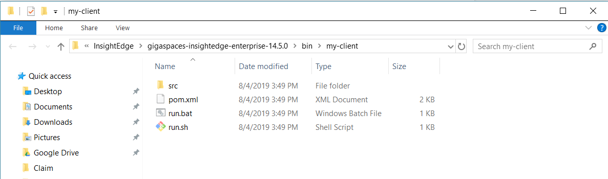
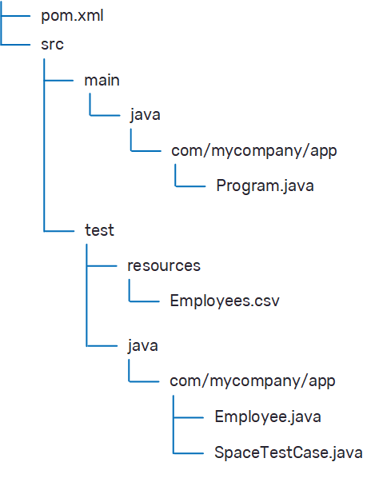

This topic helps you get started with the
***************************
copy everyhting from https://docs.gigaspaces.com/xapdih/latest/started/xap-ide.html and https://docs.gigaspaces.com/xapdih/latest/started/installation-maven-overview.html and we will edit them and link to the full pages
********************************
∨∨∨∨∨∨∨https://docs.gigaspaces.com/xapdih/latest/started/xap-ide.html∨∨∨∨∨∨∨∨∨∨∨∨∨∨
To check your installed Java version:
set JAVA_HOME.A response similar to this suggests you have a JDK installed:
JAVA_HOME=C:\jdk1.8
To check the JDK version, run %JAVA_HOME%\bin\java \-version. A response like this from Java indicates you have a valid JDK installed:
java version "1.6.0_23"
Java(TM) SE Runtime Environment (build 1.6.0_23-b05)
Java HotSpot(TM) Client VM (build 11.0-b16, mixed mode, sharing)
If your installed JDK version is lower than 1.8 or none is installed, see below on how to install one.
/examples/helloworld and click OK.GS_HOME to name the variable.The
lib/required - JAR files that are required for any GigaSpaces application.lib/optional - JAR files that enable additional capabilities, such as servlet api.lib/platform - JAR files that are used only by the In order to compile and run
When an application is deployed as a Processing Unit, there is no need to add lib directory, the system will remove those JAR files and replace them with the system's JARs for compatibility.
When running a standalone client that accesses WEB-INF/lib directory.
The main dependency required to use xap-openspaces.
<dependency>
<groupId>org.gigaspaces</groupId>
<artifactId>xap-openspaces</artifactId>
<version>[%=Versions.maven-version-MX%]</version>
</dependency>
<repository>
<id>org.openspaces</id>
<url>http://maven-repository.openspaces.org</url>
</repository>
∧∧∧∧∧∧∧∧https://docs.gigaspaces.com/xapdih/latest/started/xap-ide.html∧∧∧∧∧∧∧∧∧∧∧∧∧
∨∨∨∨∨∨∨https://docs.gigaspaces.com/xapdih/latest/started/installation-maven-overview.htmll∨∨∨∨∨∨∨∨∨∨∨∨∨∨
Maven is a tool used to automate and simplify the development cycle of any Java-based project. The
Maven must be installed and included in your system PATH variable.
If you don't have Maven installed, refer to the Apache Maven documentation for download instructions.
To install the Maven artifacts, run the following command:
Some Maven setups require a slightly different Maven installation process.
Create a temporary directory (pom.xml for the installation process.
Add each artifact in pom.xml, and extract the artifact's pom.xml if needed.
Install the main pom.xml using a standard mvn install command.
Delete the temporary folder.
If needed, you can customize the list of installed artifacts by editing the gs-artifacts.txt file.
In addition, the gs maven install command supports an optional --generate-only flag, which generates the temporary directory and files without installation (steps 1+2), so you can tailor the generated content to your needs.
<repository>
<id>org.openspaces</id>
<url>http://maven-repository.openspaces.org</url>
</repository>
The main dependency required to use the data grid is xap-openspaces.
<dependency>
<groupId>org.gigaspaces</groupId>
<artifactId>xap-openspaces</artifactId>
<version>[%=Versions.maven-version-MX%]</version>
</dependency>
This section lists the core artifacts. You only need to add xap-openspaces, because all the other core artifacts are its dependencies.
The group ID for these artifacts is org.gigaspaces.
| Artifact ID | Location in product |
|---|---|
| xap-openspaces | |
| xap-datagrid | |
| xap-common | |
| xap-trove | |
| xap-asm |
This section lists extension artifacts. The group ID for these artifacts is org.gigaspaces.
| Artifact ID | Location in product | Required for |
|---|---|---|
| xap-map | Map API | |
| xap-map-spring | Map API | |
| xap-jms | JMS | |
| xap-jetty | Jetty PU Container | |
| xap-mongodb | MongoDB integration | |
| xap-spatial | Geospatial Queries | |
| xap-full-text-search | Full Text Search |
This section lists Premium artifacts. The group ID for these artifacts is com.gigaspaces.
| Artifact ID | Location in product | Required for |
|---|---|---|
| xap-near-cache-spring | Client Side Caching | |
| xap-near-cache | Client Side Caching | |
| xap-security | Security | |
| xap-zookeeper | Consistency-biased leader election | |
| xap-admin | Admin API |
This section lists Enterprise artifacts. The group ID for these artifacts is com.gigaspaces.
| Artifact ID | Location in product | Required for |
|---|---|---|
| xap-mx-rocksdb | MemoryXtend - SSD | |
| xap-wan-gateway-spring | WAN Replication | |
| xap-wan-gateway | WAN Replication |
∧∧∧∧∧∧∧∧https://docs.gigaspaces.com/xapdih/latest/started/installation-maven-overview.htmlll∧∧∧∧∧∧∧∧∧∧∧∧∧
If you haven’t done so yet, download and unzip the software package in your preferred location, and apply the license key.
For more detailed instructions, see the
∨∨∨∨∨∨∨https://docs.gigaspaces.com/xapdih/latest/started/common-environment-variables.html∨∨∨∨∨∨∨∨∨∨∨∨∨∨
This topic explains how the
The setenv, located in the setenv utility to derive the commonly used
To use this utility, you can simply call it from within your script file.
The insightedge-env, located in the insightedge-env starts by invoking the setenv configuration script, so all of the
During the initial development stages, it is usually unnecessary to change any of the default
Do not make changes to the original setenv script, as it complicates upgrading setenv-overrides script, which is automatically called by setenv and is intended for specifying custom overrides in a safe manner.
The following list describes
| Name | Description | Default Value |
|---|---|---|
| JAVA_HOME | The directory in which Java is installed. | |
| The GigaSpaces |
Automatically set via the folder structure | |
| License key (for Premium and Enterprise editions). | ||
| Lookup Service groups used for multicast discovery. | [%=Versions.default-lookup-group%] | |
| Lookup Service Locators used for unicast discovery. | ||
| The network interface card that will be used by |
Automatically set to the host name | |
| The default policy file. | ||
| The location of the |
||
| Set the list of Manager servers that other machines can connect to. | ||
| Define the public IP address for the Docker host machine. | ||
| Java options for the |
||
| Java options for the Grid Service Container (GSC). | ||
| Java options for the Grid Service Manager (GSM). | ||
| Java options for the Grid Service Agent (GSA) | ||
| Java options for the Lookup Service (LUS). | ||
| Java options for the Elastic Service Manager (ESM). | ||
| Java options for the GigaSpaces Management Center. | ||
| Java options for the Web Management Console. | ||
|
Append these options to the default GigaSpaces
|
||
|
Override the default GigaSpaces For use by GigaSpaces engineers. To add options, use
|
||
| Override the default GigaSpaces library path and set java.library.path to this path. | ||
| Append the path to the default GigaSpaces library path and set java.library.path to the result. |
When running in ./gs-agent --manager configuration, this environment variable is ignored.
The following list describes
| Name | Description | Default Value |
|---|---|---|
| SPARK_HOME | The directory where Spark is installed | |
| INSIGHTEDGE_CLASSPATH_EXT | Extra classpath to append to |
|
| INSIGHTEDGE_SPACE_NAME | Space name to use in |
demo
|
In addition, you can also use standard Spark environment variables. The SPARK_MASTER_PORT to override the default 7077 port.
Environment variables in
In previous versions, environment variable names were inconsistent, which occasionally led to confusion. Starting with XAP_ prefix, so they're easier to identify. The following table maps the pre-11.0 names to the current names:
| Name before 11.0 | Name in 12.0 and higher |
|---|---|
| JSHOMEDIR | XAP_HOME |
| LOOKUPGROUPS | XAP_LOOKUP_GROUPS |
| LOOKUPLOCATORS | XAP_LOOKUP_LOCATORS |
| NIC_ADDR | XAP_NIC_ADDRESS |
| POLICY | XAP_SECURITY_POLICY |
| GS_LOGGING_CONFIG_FILE | XAP_LOGS_CONFIG_FILE |
| GSC_JAVA_OPTIONS | XAP_GSC_OPTIONS |
| GSM_JAVA_OPTIONS | XAP_GSM_OPTIONS |
| GSA_JAVA_OPTIONS | XAP_GSA_OPTIONS |
| LUS_JAVA_OPTIONS | XAP_LUS_OPTIONS |
| ESM_JAVA_OPTIONS | XAP_ESM_OPTIONS |
If you'd rather postpone or avoid changing your scripts to the new names, you can use the setenv-overrides script to map the corresponding values. For example, suppose you customized the lookup groups and the GSC options. If you followed GigaSpaces best practices, you created a custom script to set those environment variables before calling the original script, for example:
export LOOKUPGROUPS=foo
export GSC_JAVA_OPTIONS=-Xms1024m -Xmx1024m
./gs-agent.sh
set LOOKUPGROUPS=foo
set GSC_JAVA_OPTIONS=-Xms1024m -Xmx1024m
call gs-agent.bat
The gs-agent script calls the setenv script to set up the environment, which in turn calls the setenv-overrides script mentioned above to implement any customization that overrides the default values. You can modify setenv-overrides to propagate the old variables to the new ones, for example:
export set
∧∧∧∧∧∧∧∧https://docs.gigaspaces.com/xapdih/latest/started/common-environment-variables.html∧∧∧∧∧∧∧∧∧∧∧∧∧
To start the interactive shell, open a command window from the
Type the following command to launch the script:
xxxxxxxxxxxxxxxxxxxxxxxx
Then type the following command to display version information:
versionxxxxxxxxxxxxxxxxxxxxxxxx
blueprint list - displays a list of available blueprints.blueprint - displays a list of available blueprint commands.When you create a project, the blueprint leads you through an interactive work flow where you define a number of options as you create your configuration. Using only the default options in the work flow creates a client application that is configured to use the Space that is generated with it.
When you first begin to generate a blueprint-based project, you can give the project a name. We skip this in the example.
To create a project:
Type blueprint generate. This begins the configuration work flow.
The project is created, and the target path is displayed. You are prompted to open the project in your default file explorer.
Generated project from client at D:\InsightEdge\gigaspaces-insightedge-enterprise-Press Enter to view the project files.

The project that is created by the client blueprint has the following structure:

Where:
xap-openspace.main method that demonstrates how to connect to an existing Space or how to create an embedded Space.For more information about using Maven with
To build the project:
Open a shell from the my-client folder.
Run the following command to build the project and run the test (as shown in the shell output). The test demonstrates how to write data to the grid, and how to read from the data grid.
mvn.{sh/bat} packageYou can open any standard Java IDE (for example, Eclipse or IntelliJ IDEA) and import the project using the pom.xml file. After the project is imported, you can run or debug it, and experiment with changing the test to become more familiar with the Space API.
A data grid in a local environment is hosted on a service grid. The service grid is comprised of one or more machines (service grid nodes) running a Grid Service Agent (or GSA), and provides a framework to deploy and monitor applications on the data grid.
To start the service grid:
To start a service grid with 4 containers, navigate to
After you launch a service grid, you can deploy a data grid and begin to use it.
To deploy the data grid:
Open a command window, navigate to
This command deploys a data grid (aka Space) called myGrid with 2 partitions and 1 backup per partition.
After the data grid has been deployed, you can run your project again. To connect to the existing Space, change the default Space name to the name of the Space you just created.
To run the project again:
./run.sh myGrid
.\run myGrid